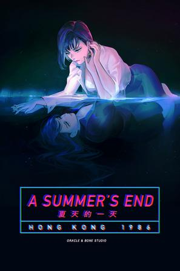

夏天的一天－香港1986 A Summer's End - Hong Kong 1986
“我正在努力成为一个忠实于自己，也诚恳对待他人的好人” 更像是交互式电影，配乐很蒸汽，东亚女同共享同一个妈
最后一次看到是 2026-08-12T17:46:46+08:00 · 豆瓣原页

“我正在努力成为一个忠实于自己，也诚恳对待他人的好人” 更像是交互式电影，配乐很蒸汽，东亚女同共享同一个妈
最后一次看到是 2026-08-12T17:46:46+08:00 · 豆瓣原页